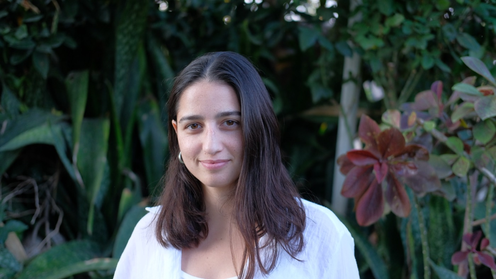

יובל דורון אבייב
נטורופתית מוסמכת, ארומתרפיסטית ומורה ליוגה.
מלווה נשים בתהליכי החיים דרך טיפולים הוליסטיים, סדנאות ותנועה, בתל אביב ובעמק האלה.

את אדמורה — שילוב של המילים אדמה, אור ואהבה — הקמתי מתוך תשוקה להאיר את דרכם של אחרים אל הריפוי הטבעי.
המסע שלי החל בתקופת השירות הצבאי, כשאובחנתי עם מחלת קרוהן. קיבלתי את התווית המוכרת: "מחלה כרונית", יחד עם המרשם הקבוע לשיכוך כאבים. אך משהו בתוכי התחיל לשאול — האם יש דרך אחרת?
המסע לריפוי הוביל אותי לגלות את העוצמה שבשילוב בין משאבי הטבע, מסורות רפואה עתיקות, ובעיקר — אהבה עצמית ואמונה. למדתי להאט את קצב החיים ולהקשיב פנימה דרך טיפולי גוף-נפש, תרגולי נשימה, יוגה והתבוננות עמוקה.
כשהפסקתי להזדהות עם המחשבות המגבילות ונתתי לגופי את מה שהוא באמת צריך, גיליתי ריפוי שלא האמנתי שאפשרי עבורי. כפי שאמרה לואיז היי: "אין כל חוק המחייב אותנו להמשיך ולהאמין במשהו רק מפני שהאמנו בו בעבר".
היום אני מקדישה את חיי לליווי אחרים במסעם האישי לריפוי. אני מאמינה שכאשר מרחיבים את נקודת המבט, מגלים שהדרך לבריאות אינה שחור-לבן, ושהצעד הראשון תמיד מתחיל במודעות.
מזמינה אותך להתחיל יחד את המסע שלך.
מה למדתי
- 2024 — נטורופתיה (ארבע שנות לימוד), מכללת רידמן לרפואה משלימה
- 2024 — האטה יוגה (500 שעות), פראנה יוגה סנטר (שאקטי מאי)
- 2023 — צמחי מרפא ותזונה טבעית, מכללת רידמן לרפואה משלימה
- 2022 — רפלקסולוגיה, מכללת רידמן לרפואה משלימה · רייקי 1+2, רחלה ארומתרפיה
- 2021 — ארומתרפיה ופרחי באך, מכללת רידמן לרפואה משלימה
השנים — שנת קבלת התעודה.